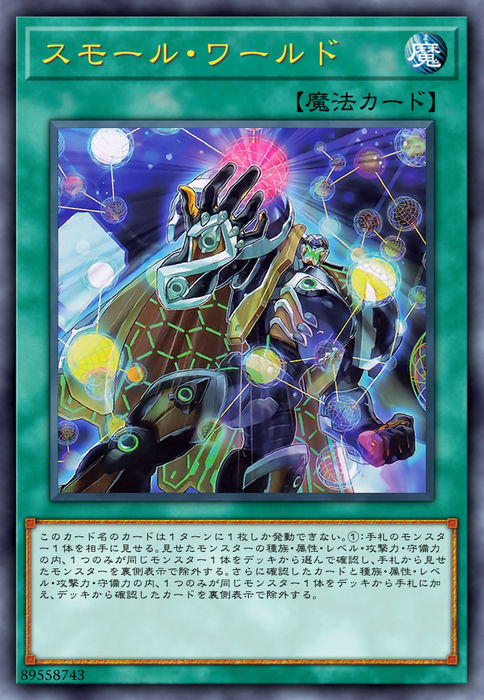
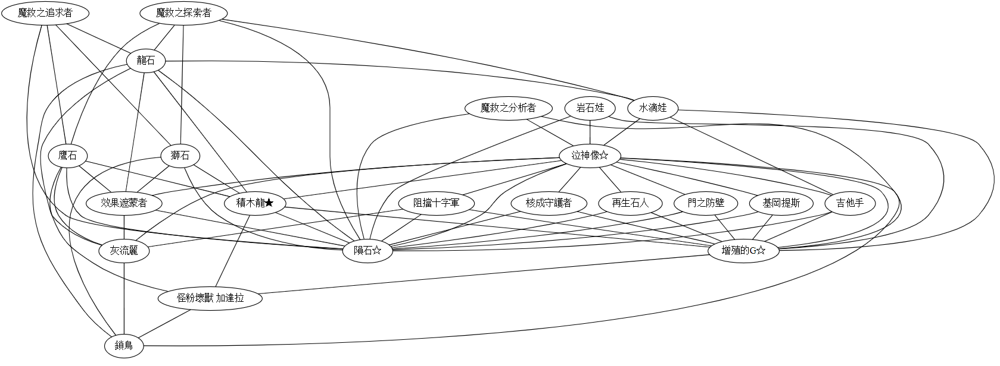
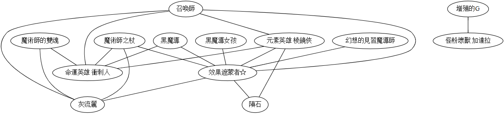
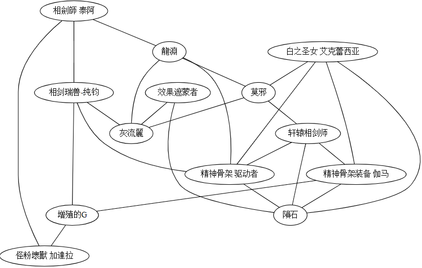

当我看到游戏王出了小世界现象这张卡时，不禁会心一笑。

这个卡名的卡1回合只能发动1张。①：向对手展示手牌的1只怪兽。从卡组选1只与展示的怪兽的种族·属性·等级·攻击力·守备力之中，只有1项相同的怪兽确认，将从手牌将展示的怪兽以里侧表示除外。再从卡组将1只与确认的怪兽的种族·属性·等级·攻击力·守备力之中，只有1项相同的怪兽加入手牌，将从卡组确认的卡以里侧表示除外。
“六度分隔理论”认为世界上任何两个人之间都可以通过六个中间人就可以建立起联系。类似的，“小世界现象”这张卡让你能够借助一张中间怪兽，将手中的怪兽换成另一张怪兽。
注意到这张卡时，我正在玩“魔救·积木龙”卡组，小世界现象的出现为我检索积木龙（一张关键卡）提供了一种额外的途径。这张卡的有趣之处不仅在于关键卡的检索，还在于它提供了许多有趣的可能。例如，我该如何将手中的一张废件换成一张有用的手坑呢（例如灰流丽、增殖的G），相应检索链的中间卡是哪张？在思考这个问题的过程中，你会发现小世界现象一卡带来了种类繁多的可能检索链。人工穷尽这所有的可能几乎办不到。
为了做这件事，我写了一个程序来分析这个问题。 以下展示在一些典型卡组上运行程序得到的结果。

假如我们手中有A卡，想用小世界现象将其转化为B卡，可以从图中看看有没有C卡能够作为中间结点，将AB相互链接。例如，设A卡是灰流丽，我们想把它换成B卡积木龙。查找这张图发现我们可以用魔救的鹰石作为中间卡（这是因为鹰石和灰流丽都是0攻，和积木龙都是岩石族）。
可以看到如泣神像、陨石、增殖的G等结点有许多边与之连接。这样的结点好比是卡组中的“明星”结点。许多卡都可以它们为中间卡来检索得到。

上图展示的是黑魔导卡组的检索链。可以看到，效果遮蒙者是一个重要的明星结点；想要构建检索增殖的G的检索链很困难，因为图中增殖的G只和坏兽相连接，形成了一个“孤岛”。
 最后展示一个相剑卡组的检索链。如图，该卡组没有十分明显的“明星结点”。卡组没有明星结点会导致小世界现象的牌效降低，想记住一些实用的检索链也变得很困难。
总结
本文介绍了小世界现象这张卡，介绍了我写的用于分析卡组检索链条的小程序。 你可以在这里试用这个程序。
总的来看，小世界现象不是一张特别强的卡——它需要里侧除外一张手卡作为代价。目前的T0卡组总是会有各种各样的检索手段和1卡展开方法，投入小世界现象对于它们意义不大。 这张卡的存在对于缺乏关键卡检索手段的娱乐卡组还是很重要的。希望Konami多出一些像小世界现象这样，有趣、有用而且又不打破平衡的卡吧。